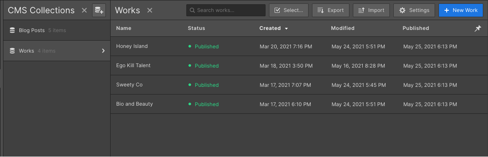

It's highly recommended to add at least 4 projects to the Work CMS Collection in order to make the interactions working perfectly on Home#2, Home#3, Work#1 and Work#2 pages.

Add at least 4 projects to the Work Collection to ensure the animations will play smoothly.
How to change the type on the horizontal scrolling animation
It's pretty simple — Just go the Setting panel and change the copy on the instance override panel.